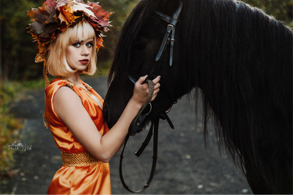

Верховая езда
Мы предлагаем уроки верховой езды для каждого!
В клубе есть пони для детей от 4х лет и старше,
учебные и спортивные лошади.
Даже если Вы никогда не сидели верхом, наши
дружелюбные и спокойные лошадки помогут Вам
с легкостью освоить азы посадки в седле и управления
лошадью уже на первом занятии! Для продвинутых
всадников - тренировки по спеуиализации (выездка
и конкур), прогулки по живописным полям. Есть крытый
манеж, что позволяет с комфортом заниматься в любое
время года и в любую погоду.
Стоимость катания: от 350 руб. за 15 минут,
разовые занятия: 1000 руб./ час,
Спортивные тренировки от 800 руб.

Фотосессии
Потрясающе провести время и получить на память
яркие кадры с прекрасными лошадьми в любое
время года! Вы можете как воспользоваться услугами
фотографа клуба, так и пригласить своего,
а мы предоставим красивую ухоженную лошадь или
пони! Кроме того, у нас есть различные тематические
костюмы, которые так же можно взять напрокат!
Аренда лошади для фотосессии: 1000 руб./час,
Фотопрогулка с фотографом клуба: 2000 руб./час,
Аренда костюмов от 1000 руб.